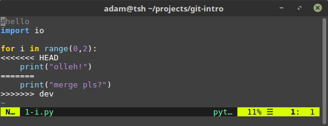
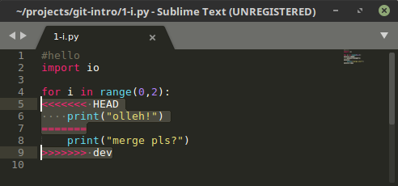
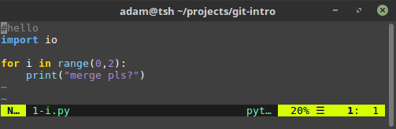
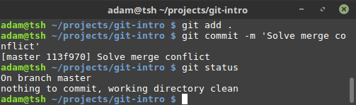
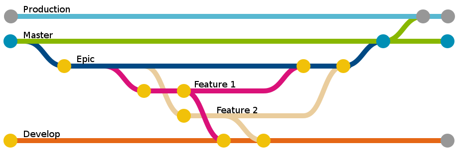
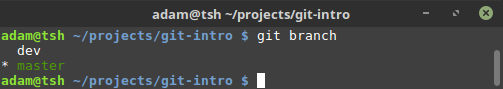
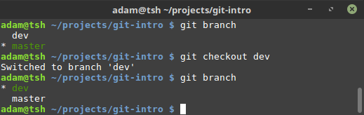

An introduction to Git
Open source version control
Slides by Adam Ingwersen
Powered by reveal.js
Motivation
- Git is used (primarily) for coding projects
- It enables multiple users to track their contributions
- It allows for easy versioning of projects
- With Git, projects can be branched to yield multiple new projects
- Git ensures, that all code changes are documented - if used properly
When to use Git
You'll typically want to use a version control tool, such as Git, when cooperating on projects or when building larger projects by yourself.
Git is also a very useful tool for handing over projects, as it allows external readers to understand how the project was built, and what changes were made as the project progressed.
Other benefits
- You can host your code online and import your environment to a new machine
- Git can extrapolate the exact changes made and highlight these, so you wont have to read thousands of lines of code to find changes
- Many tools are built around Git, which allow for automatic runing, testing and notifications.
- Process flows can be set up so that changes to the code are reciprocated to multiple machines. Handy for production
Amazing...Right?
Git != GitHub
Git is a free open source tool, which GitHub (a company) incorporates into their servers. GitHub thus functions as a platform for people to use Git more freely. This is similar to GitLab. Each have pros and cons - but essentially do the same: host servers that allow programmers to put their code online for sharing and collaboration. Think of it as you would services like Dropbox.
So, how does Git work? (1 - setup)
Git revolves around repositories, repo for short, which lie on top of directories - in Windows, you'll know them as folders
Once a repository has been initialized, it should be configured to use your credentials and typically a Git-enabled server to send the code to
Git does not require a Git-enabled server such as GitHub to work or be useful - you can use Git locally, if you so desire
So, how does Git work? (2 - setup)
When an empty repository is initialized, a hidden .git folder created
This folder contains a lot of things, that you shouldn't worry about - except the config file.
The config file contains information about the user, destination server and other configuration settings such as default behaviour of git in the repository.
Let's see that in action
I have an empty folder:
I use the following command to initialize a new git repository
git init
Code syntax highlighting courtesy of highlight.js
...and now there we have the .git folder:
...which contains:
Having a look at the config file
... there's not a lot in here
We can start adding to the config file by modifying it directly
...or we can use Git's built-in tools for this:
git config user.name "your name in quotes"
git config user.email youremail@somemail.com
...and the config file has now been changed accordingly
You can also use the following command to show the contents of the config file.
git config --list
Moving on
We're going to take a more in-depth look at setting up server configuration later
For a more detailed explanation of git config, consult this guide
So, how does Git work?(3 - changes)
Git will help track new files as they are added and modified
Although, this requires that you actively tell git when to record the changes
In a sense, Git takes a snapshot of your repository when you tell it to
So, how does Git work?(4 - changes)
Git uses a staging and a commitment phase
In the staging phase, you tell Git which files to look for changes in
In the commitment phase you tell Git that you are prepared to commit to the changes and what you've done since last commit
You can add to staging multiple times before committing to the changes
The Local Git Workflow

When a repository has been initialized and configured, you may wish to add some files to it
This you can do as usual - no dark magic there
Let's create some files:

We can inspect the current status of the repository by writing
git status
We see, that the newly created set of files are untracked, as Git has not yet seen them before
Git will not track empty files or directories/folders
So let's put some arbitrary text into some of the files and add the changes for staging
//you also could do this by opening the files in an editor
echo "#hello" >> 1-i.py 2-am.R 3-not.sql
git add 1-i.py
Note, we're only adding one file out of the 3 modified ones
Having now added one file for staging, we can see, that Git tells us, it's ready for commit
If you would like to add all the changes made in the directory, you can do
git add .
Note, that this will add all files in all sub-directories
Having added a modified file, we're now ready to commit to the changes made
We've got to remember to attach a comment, indicating, what the purpose of the change was
git commit -m "Add comment to .py-file for testing purposes"
A quick remark about commits
commits rely on relatively frequent usage
It's inteded use is: commit at any time, where you've made changes that alter the functionality of your code
A commit is the only information conveyed to 3rd-party modifiers as to what was done and why
Keep them brief, precise and frequent
Commit messages are important

Bad commit messages
iadwadjawlawldjkj
quick fix
working on feature
changed line 32, 11, 93 and 199
More can be found in the commit messages hall of shame
The good commit message
- Tells, why the change was made
- Briefly describes what was done
- Max 50 characters
- Uses newlines
- Preferrably in present tense/imperative mood
There are a multitude of guides out there, but I really liked this one by a guy named Chris
WHAT IF I WANT TO UNDO WHAT I ADDED?
If you used git add and want to undo it, simply
//Undo for single file
git reset [file]
//Undo all
git reset
Oops, I accidentally used git commit
You can go back to a previous commit using the revert command
git revert [commit-id]
What if i don't want to track a file?
Say hello to the .gitignore file
What if i don't want to track a file?
This file is not created by default, but just create it
In it, you can type a specific file - or file-format, you want Git to ignore
//In .gitignore
//Particular file
1-i.py
//Particular file type
*.py
So, now i know git, right?
Those were the very basics
The four commands shown above; git init, git add, git status and git commit are, alongside git config, the commands you'll typically need in a workflow - if you're working locally.
There's still a lot to learn
- Using git's built in tools to understand changelogs etc.
- Connecting Git to networks and online services
- Branching and versioning
In truth, Git has an exhaustive set of features to learn - but we're focusing on the fundementals
Understand the repo
Git provides a set of tools to analyse the work you've done so far
These tools are useful to some - whilst others prefer to inspect their work using e.g. github.com
Understand the repo
Git stamps each commit with an ID
A Git commit ID is actually constructed from a SHA-1 hash that contains important information about the contents of the file, commit date, user, etc.
The commit id is in a sense, the short version of the commit hash
We're not going to use this - but there's meaningful information in the ID
Understand the repo
You can have the repo 'history' presented with git log
git log
//or
git log --oneline
This will present all previous commits by their ID, date, user and commit message
Adding the '--oneline' flag compacts the information presented
Understand the repo
You can also have Git show the differences between commits
This is especially handy when you can't remember what you did a week ago or when collaborating with others
Understand the repo
You can check what has changed in the current commit compared to a particular one
git diff [commit-id]
Let's see that in action
Note; I've made some arbitrary commits since we last saw a screenshot
The last thing i did was to create a for-loop in commit 5ed17aa
Let's inspect what happened since the latest commit and the previous
In this commit, I deleted a line i 1-i.py, marked with - and red
I also added 5 lines of generic python code, marked with + and green
If you want to inspect the repository or a particular commit, you can also use:
git show
git show [commit-id]
All these commands has a plethora of option-flags
For example, it's possible to limit the view in terms of contributors, date or other criteria
You can always consult the documentation, or use the --help flag for possible arguments and format
git diff --help
Ok, at this point you're familiar with the fundemental commands and tools you need for local development using Git
But you can do so much more with Git...
Git on networks
Git on networks
Git can be deployed on servers on local networks, to function a bit like e.g. shared drives
Several online implementations host git-based services, e.g. GitHub
This is where Git gets really interesting
In order for git to communicate with a server of any sort, we have to go back to the config file
The config file can accomodate remote destinations for use when you want to update the local or remote contents of your repo
This will serve as the target to which the git client communicates with
The git collaboration workflow
Git primarily uses 3 commands for moving information around
git push will move information towards the remote repository
git clone will copy an entire repository to your machine
git pull will grab the latest commit from the remote repo and update your local repo

Image provided by Swathmore University's Computer Science Dept.
New repository?
You will typically have to create the remote repo on the service where it should be hosted
On GitHub you can (when logged in) click 'New Repository', name it and be on your way
New repository?
You can add the destination of the remote repository via HTTPS or SSH
In the case of HTTPS, a GitHub repo destination looks like
"https://github.com/username/repo-name.git"
New repository?
You can add that destination to your config file
git remote add origin https://github.com/username/repo-name.git
You're now ready to send whatever repo you have locally to GitHub
This is accomplished with the git push command
This command will push your latest commit to the remote destination
//First push
git push -u origin master
//All later pushes
git push
But I want to work on a repository already created
Let's say you want to help your colleague with her code
You simply clone the repository from the destination
git clone https://github.com/someuser/some-repo.git
This will copy all files alongside Git history, config and .gitignore to your machine
From here, you can alter and then push
There are cases, when you're collaborating or working on multiple machines, and the repository has been updated, and you need the latest changes on your machine
Here, you can use git pull
git pull
This will grab all changes made to the repository since the the latest push from that machine
You may at some point want to just force everything you just wrote onto the repo, regardless of previous changes
But please...
Don't ever do this!
Anytime you're collaborating on a project it's important to remember and git pull before you start working on the project
Inevitably, you'll forget it - and regret it...
Enter...
MERGE CONFLICTS
Merge conflicts
A merge conflict can occur when commits are unaligned - unsynchronized
They only occur if there's a conflict about the contents of the same line
A merge conflict can happen even when you're not collaborating, but working on multiple branches
More on branches later, as for now, think of them as two different users
Let's see that in action
I've purposely created a merge-conflict, by doing different things on the same line
On a branch, dev, where the print statement i 1-i.py differs
I now try to merge the branch master with dev
git merge [branch]
Trying to merge master with dev yields the following error message

Resolving a merge conflict can often be done by Git automagically
In cases, where Git cannot resolve them, you have to edit the script, and choose which lines to keep
You do this by opening the file and modifying it
Opening the file, where the merge conflict is stated
Note the HEAD and dev at each end of the conflict
Any lines after HEAD and before ======= are the code segments from the master branch
Any lines after ======= and befire dev, are the code segments from the dev branch
Now, the user has to determine, which commit is the right one
Let's say, the dev branch is the right one
We then edit out the conflict the highlighted text
We're left with the following
Save the file, add and commit - the merge conflict is now resolved
Remember to write a fitting commit message. So others may understand why the conflict occured, and how it was solved
As you probably noted, I talked about branches in the previous slides
You may sometimes want to try out something, that shouldn't go into production until refined
For this, branches are great
They allow you to take all files of a repository and alter them, try them out in isolation of the main project
Whenever the features are fully developed you merge the development branch onto e.g. master
Git branches
Wanna branch out?
You wanna try to build a new feature or alter the existing code, but don't want to mess with the existing repository
The workflow presented below will allow you to do this
Git branches
When initializing a new repository, the default branch is master
If you wish to create a new branch, you use the checkout command
For new branches you have to add -b for branch
git checkout -b [newbranch]
Once a branch has been created, you can inspect all branches on your machine
git branch

This shows the different branches and your current position
Switching between branches
Switching from e.g. master to dev can be accomplished with git checkout like so
Adding remote branches
Say you have successfully developed the feature on your new branch
You're not sure whether or not the changes should be implemented though
You need your colleague to see the feature for evaluation before merging onto master
You can push the new branch to a remote repository
Push to new remote branch
You can push commited changes on a new branch to your remote git repo
git push -u origin [branch-name]
The branch will automagically be created on the remote repo